Documentación / Mission Control / 05 · Contactos y escenarios
Catálogo de contactos y previsualizaciones
Guía de consulta basada en el manual original. Las páginas del PDF se abren en otra pestaña y las capturas pueden consultarse sin perder tu lugar.
PÁGINA 21 Aliados
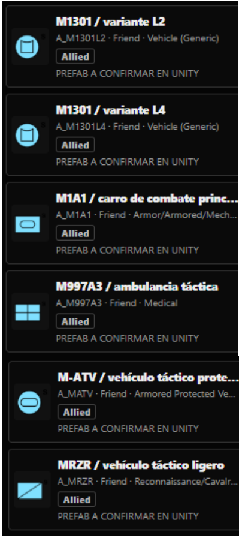
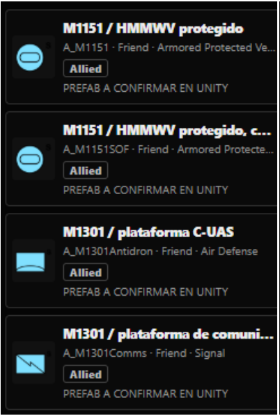
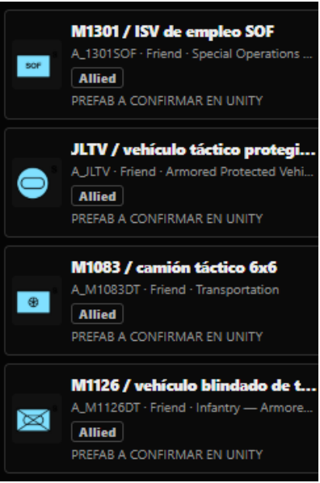
Aliados
Referencia original: PDF · pág. 21Abrir página del PDF
PÁGINA 22 Amigos
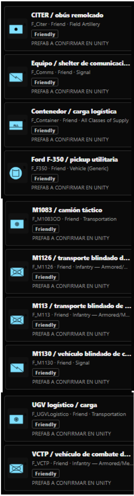
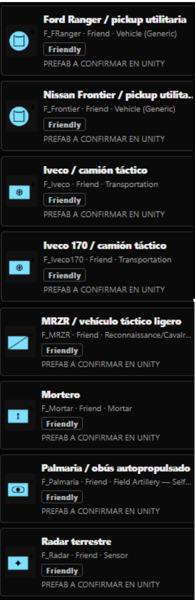
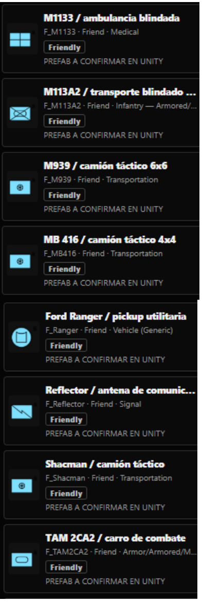
Amigos
Referencia original: PDF · pág. 22Abrir página del PDF
PÁGINA 23 Enemigos
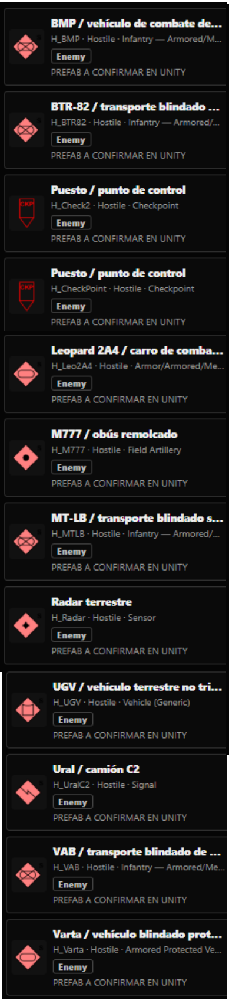
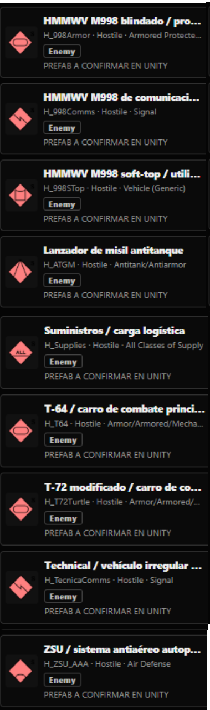
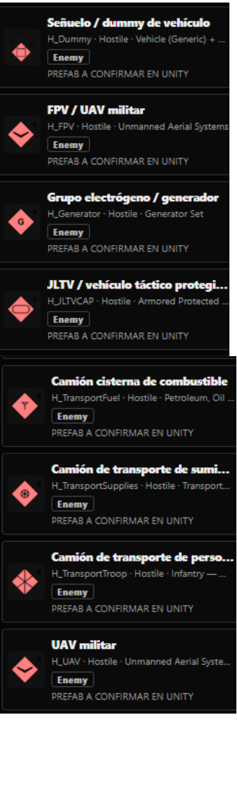
Enemigos
Referencia original: PDF · pág. 23Abrir página del PDF
PÁGINA 24 Irregulares
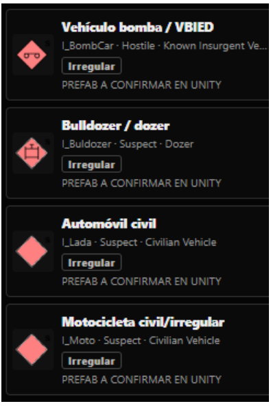
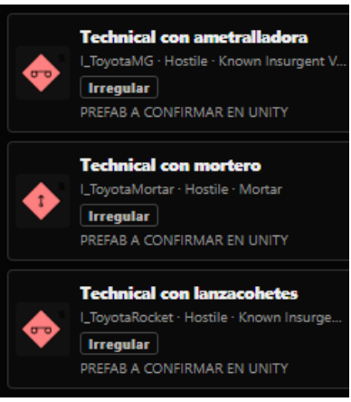
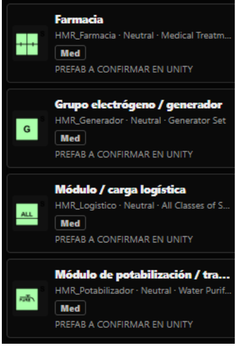
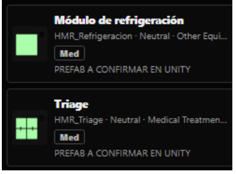
Irregulares
Hospital
Referencia original: PDF · pág. 24Abrir página del PDF
PÁGINA 25 Material de referencia
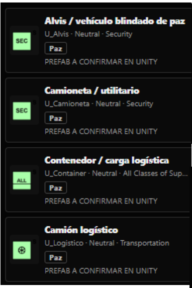
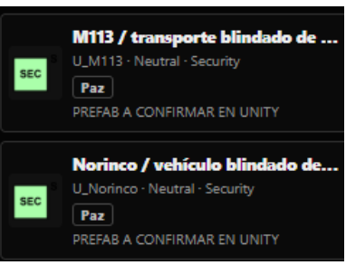
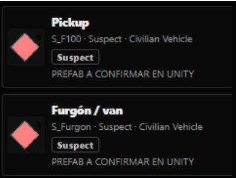
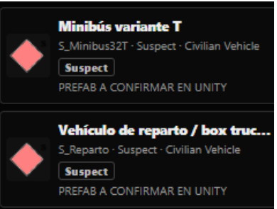
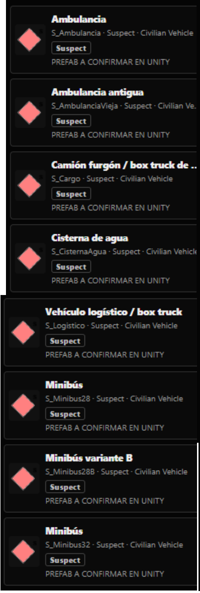
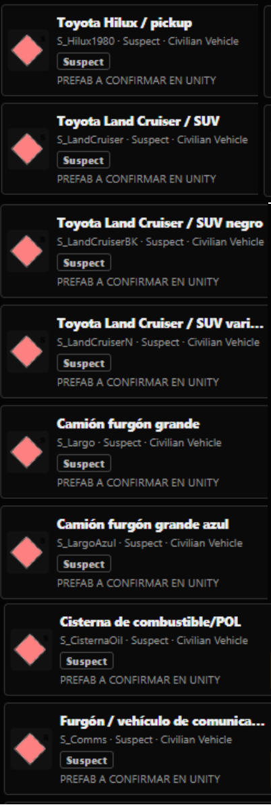
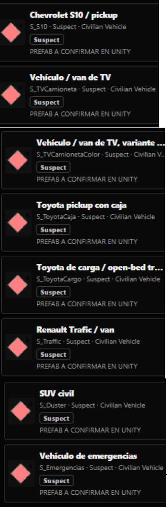
Paz
Sospechoso
Referencia original: PDF · pág. 25Abrir página del PDF
PÁGINA 26 Civiles
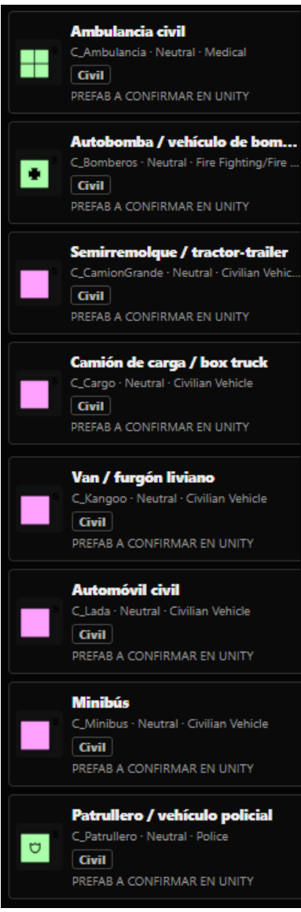
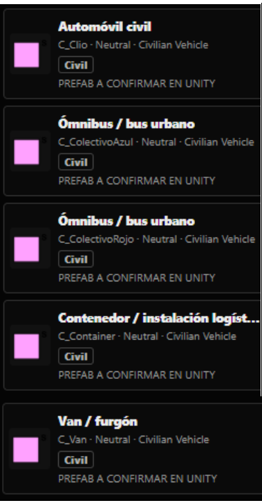
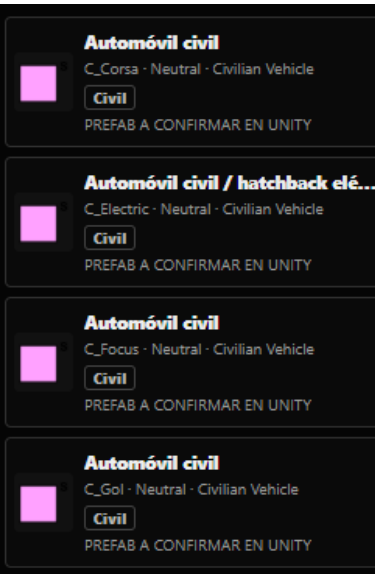
Civiles
Referencia original: PDF · pág. 26Abrir página del PDF
PÁGINA 27 Previews
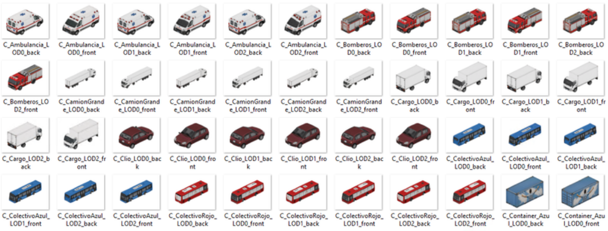
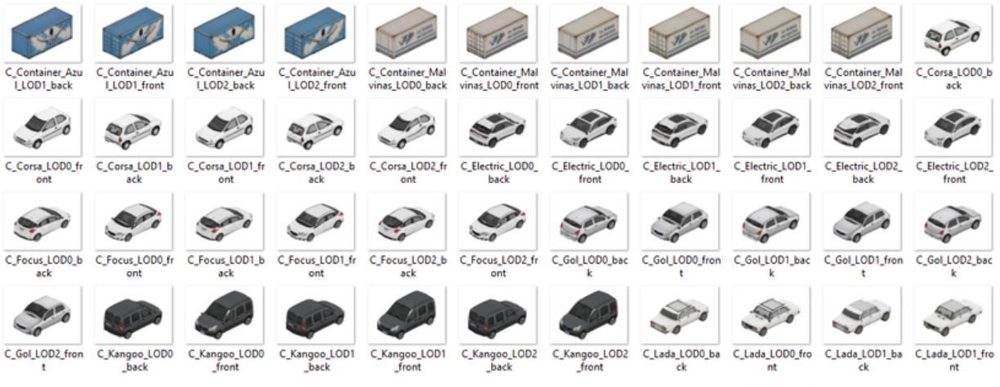
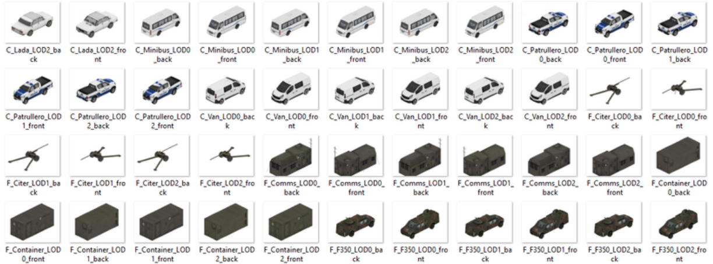
Previews
Referencia original: PDF · pág. 27Abrir página del PDF
PÁGINA 28 Material de referencia
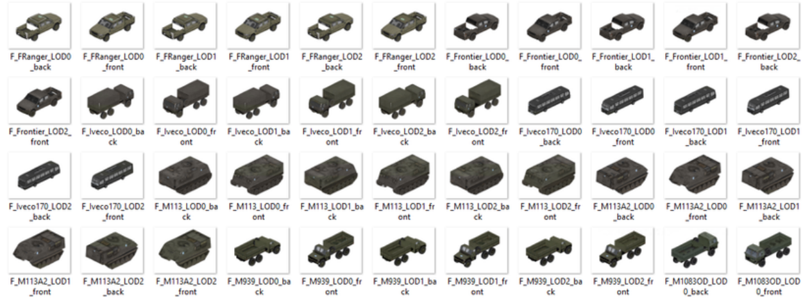
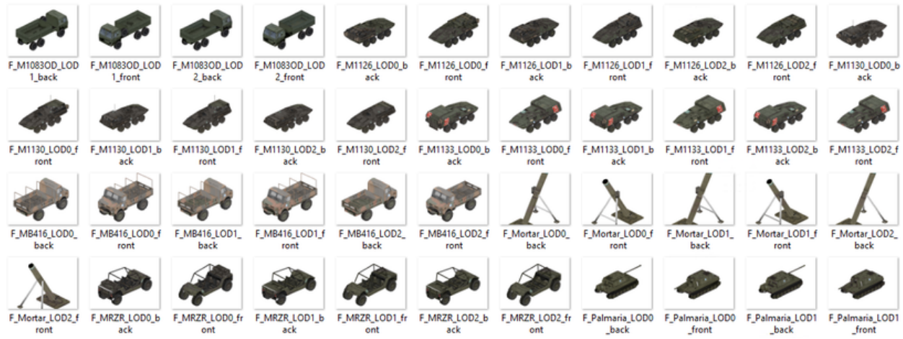
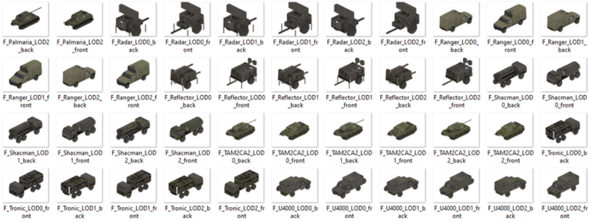
Referencia original: PDF · pág. 28Abrir página del PDF
PÁGINA 29 Material de referencia
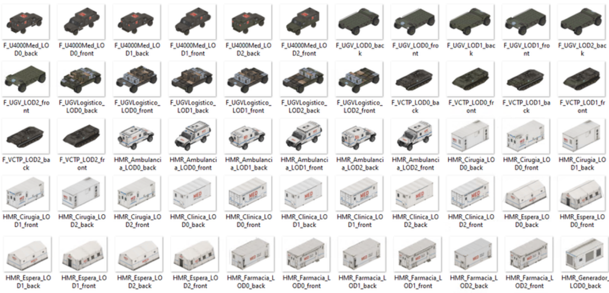
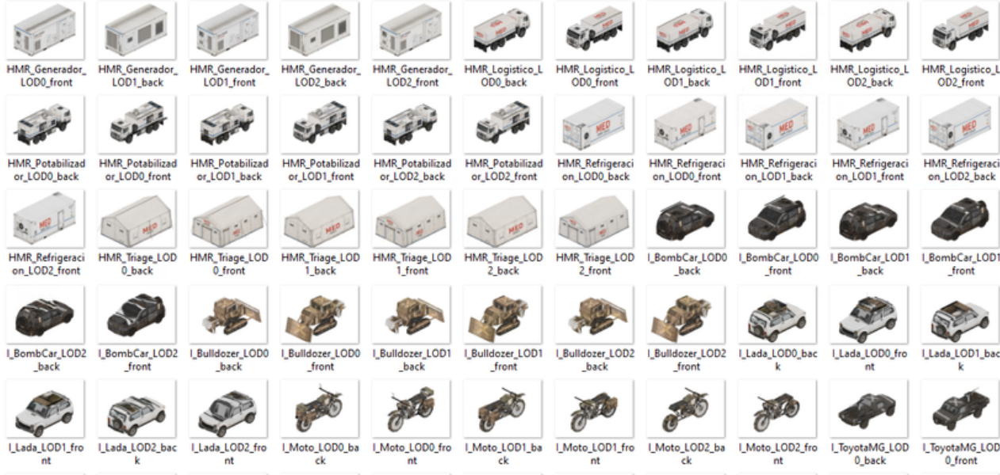
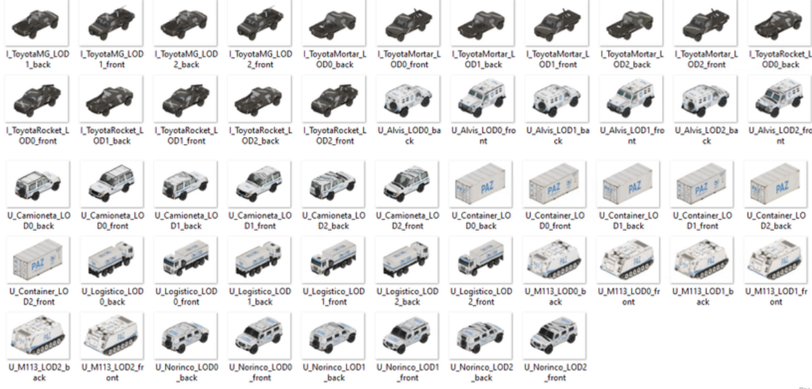
Referencia original: PDF · pág. 29Abrir página del PDF